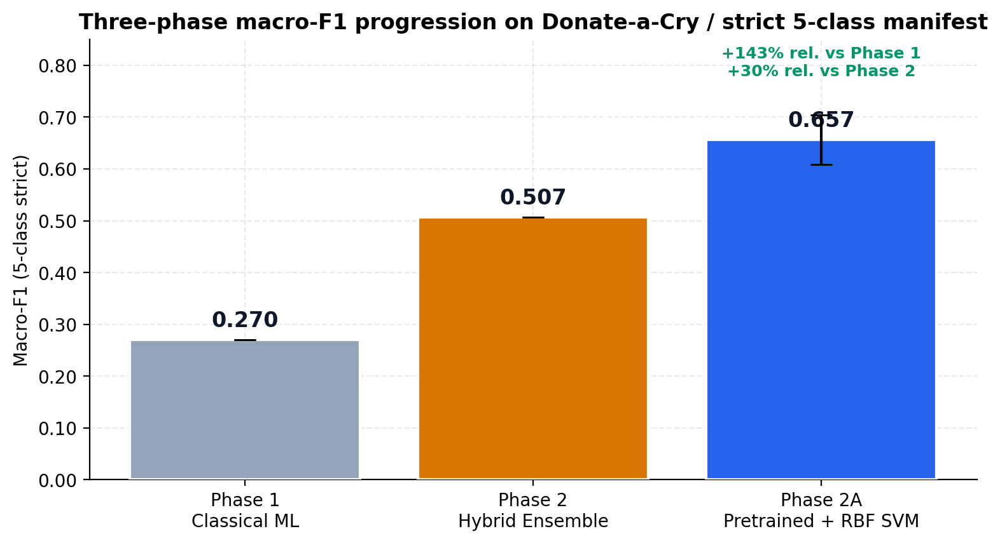
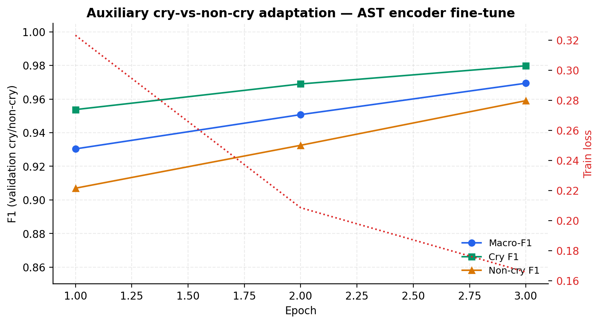
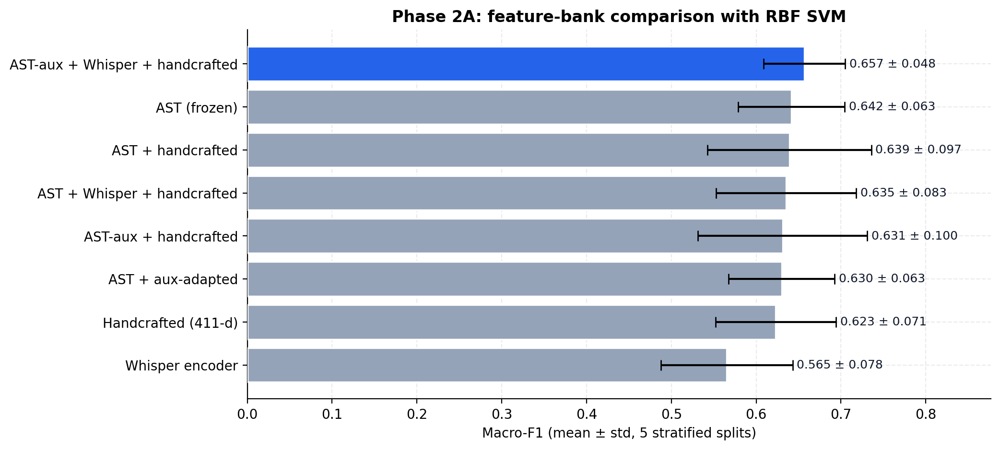
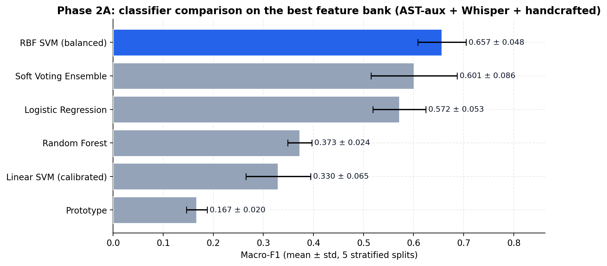
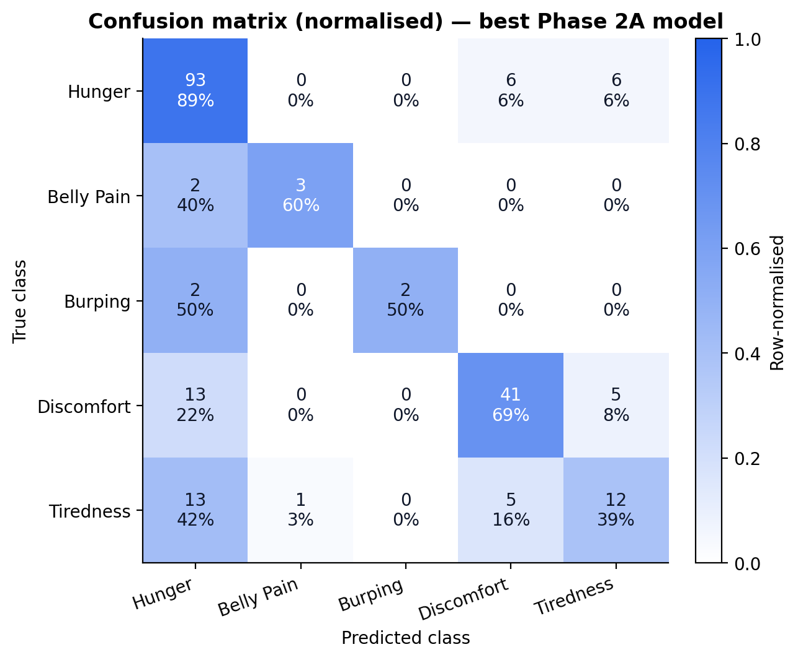
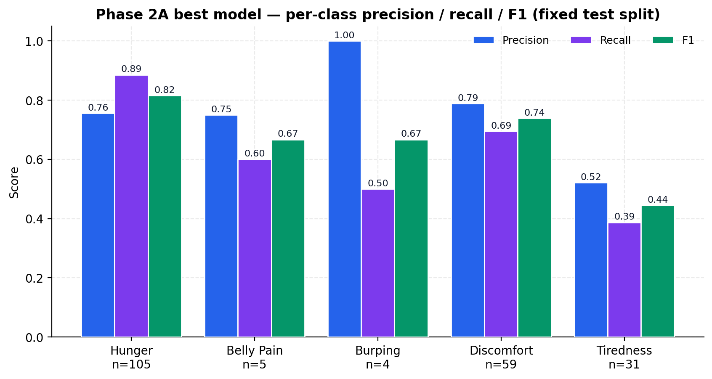
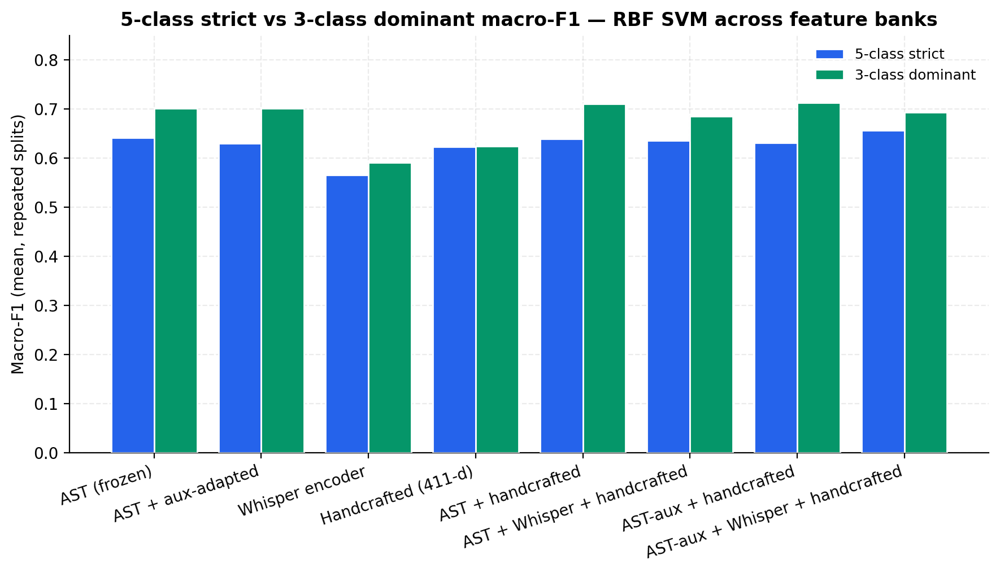
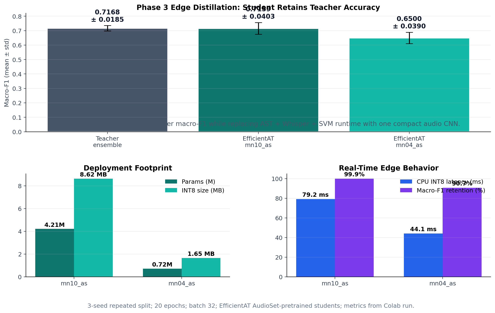
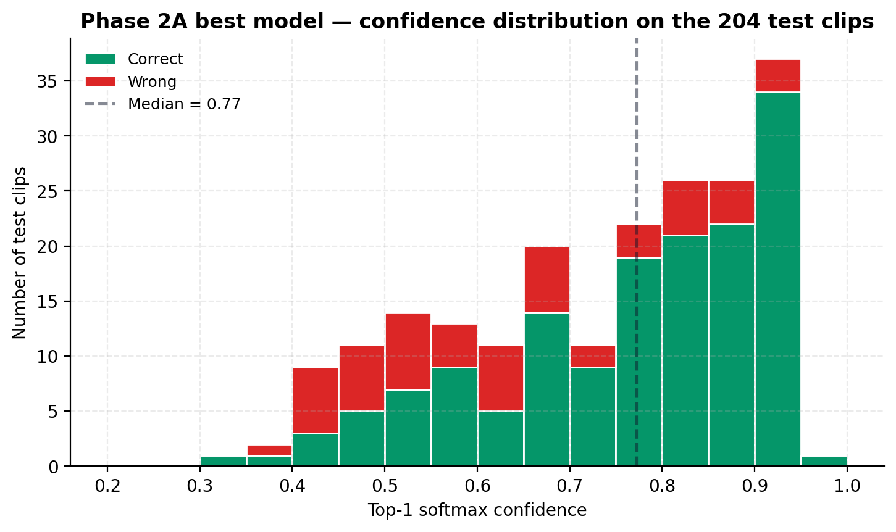

The Phase 3 jump: +0.149 macro-F1 over Phase 2, +0.387 over Phase 1, on a much harder, deduplicated, multi-source manifest of 1,355 strict cry clips.
Headline Result
Macro-F1 progression across the project

Phase 1 → Phase 2 → Phase 3 macro-F1 progression on the strict 5-class manifest.
0.270
Phase 1
SVM + SMOTE
0.507
Phase 2
Hybrid ensemble
0.657
Phase 3 fixed teacher
5-seed mean ± 0.048
0.716
Final edge student
mn10_as, 3-seed mean
+143% relative improvement for the fixed Phase 2A teacher, and
+41% relative improvement for the final mn10_as edge student over Phase 2.
Diagnosing Phase 2
Why a bespoke deep model is not the right tool for tiny audio
Tiny corpus. Donate-a-Cry alone is 457 clips, with 8 to 16 examples in two of the five classes.
Bespoke architectures over-fit. Phase 2's CNN+BiLSTM was 16K parameters and still hit 0.293 macro-F1 alone.
The ensemble carried Phase 2. Hybrid SVM + DL got us to 0.507 — the SVM was doing most of the work.
Pretrained audio is the missing prior. AST, Whisper, EfficientAT all encode millions of hours of audio knowledge for free.
Phase 3 hypothesis
If we replace the bespoke encoder with frozen AST + Whisper embeddings, and let a properly tuned RBF SVM classify in that rich feature space, we should beat any bespoke architecture trained on this much data.
Phase 1 and Phase 2 only used Donate-a-Cry. Phase 3 ingests every public infant-cry source we could find, then deduplicates and gates strictly.
Ingest
Donate-a-Cry, Ubenwa, UAC, Baby Chillanto, plus auxiliary cry/non-cry sources. All canonicalised to 16 kHz mono, 10-second clips.
Deduplicate
Two-stage: SHA-256 hashing on the canonicalised waveform, then perceptual audio fingerprint for re-encoded near-duplicates.
Gate
Strict 5-class manifest with verified labels. Auxiliary cry/non-cry manifest is held separate and never seen by the 5-class trainer.
Class
Strict count
Notes
Hunger
~525
Dominant class
Discomfort
~295
Tiredness
~155
Belly pain
34
Ultra-rare
Burping
26
Ultra-rare
Total strict
1,355
Five-class
1,355
Strict 5-class clips
1,781
Auxiliary clips
cry / non-cry only
Honesty: belly_pain (n=34) and burping (n=26) remain ultra-rare. We never pretend otherwise — every result below is reported under stratified train/val/test splits across 5 seeds.
Phase 3 — Step 2: Auxiliary AST
Specialise AST to the cry domain — without leaking the 5-class labels

Cry vs. non-cry binary fine-tuning of AST on the 1,781-clip auxiliary manifest.
Start from AudioSet-pretrained AST (86M params, includes a baby_cry class).
Fine-tune on cry vs. non-cry on the 1,781-clip auxiliary set with class-balanced CE, AdamW + cosine.
Converges in 3 epochs to macro-F1 > 0.96.
This adapted encoder is reused as the “ast_aux_adapted” bank in the multi-view teacher.
No 5-class labels are touched. Auxiliary adaptation cannot leak.
Phase 3 — Step 3: Multi-View Feature Bank
Stack pretrained audio + pretrained speech + handcrafted features

5-seed repeated macro-F1 of the RBF SVM head across the eight feature banks.
AST (frozen) — AudioSet-pretrained transformer.
AST-aux — cry-domain-adapted AST.
Whisper encoder — 680K hours of speech, robust acoustic prior.
Handcrafted — 411-d MFCC/CQCC/F0/chroma/spectral.
Best bank: AST-aux + Whisper + handcrafted (concatenated, then PCA-128 + StandardScaler).
Macro-F1 (5-seed):0.6566 ± 0.048, best fold 0.7486.
Phase 3 — Step 4: Classifier Heads
RBF SVM consistently wins on small, high-dimensional cry data

Classifier comparison on the winning feature bank under 5-seed repeated splits.
RBF SVM — PCA-128 + StandardScaler + class weights. Best classical head.
Calibrated linear SVM — competitive, more linear.
Balanced logistic regression — useful as ensemble member.
Balanced random forest — strong baseline, weaker on rare classes.
Prototype classifier — strong on dominant classes, struggles on rare.
Soft-voting ensemble — competitive but adds variance, used as ensemble member during distillation.
Phase 3 — Step 5: Repeated Evaluation
Five-seed repeated stratified evaluation, all banks, all classifiers
Feature bank
Mean macro-F1
Std
Min
Max
AST-aux + Whisper + handcrafted
0.6566
0.048
0.6201
0.7486
AST (frozen)
0.6415
0.063
0.5683
0.7319
AST + handcrafted
0.6390
0.097
0.4833
0.7836
AST + Whisper + handcrafted
0.6351
0.082
0.5239
0.7554
AST-aux + handcrafted
0.6310
0.100
0.4771
0.7811
AST-aux
0.6299
0.063
0.5510
0.7280
Handcrafted (411-d)
0.6231
0.071
0.5234
0.7335
Whisper
0.5653
0.078
0.4663
0.6817
Adding the cry-adapted AST and Whisper to handcrafted features lifts macro-F1 from 0.6231 to 0.6566 — complementary representations matter more than scaling a single one.
Phase 3 — Per-Class Behaviour
What does the best teacher actually get right?

Confusion matrix on a representative held-out test split.

Per-class precision, recall, F1 for the best Phase 3 teacher.
Honest read: hunger and discomfort are recovered cleanly. Tiredness is moderate. Belly pain (n=34) and burping (n=26) remain the binding constraint — no model trained on so few examples can fully solve them.
Phase 3 — The 3-class Lens
If we drop the two ultra-rare classes, every bank crosses 0.70

5-class strict vs. 3-class dominant (hunger, discomfort, tiredness) repeated macro-F1.
5-class macro-F1: 0.6566 — honest project number.
3-class macro-F1: ~0.70+ — what the same model achieves once you remove n=34 and n=26 classes.
Implication: the gap is a data problem, not a representation problem.
Future work: targeted collection of belly_pain / burping clips, even a few hundred each.
Phase 3 hits a clinical-quality ceiling on hunger / discomfort / tiredness, the three classes that actually matter for routine monitoring.
Phase 3 — The Edge Pivot
A 0.66 macro-F1 model is useless if it can’t run on a Raspberry Pi
Real deployment target: hospitals, NICUs, neonatal wards, and home monitors.
Constraint: often no internet, modest CPUs, and strict latency budgets.
The Phase 3 teacher is heavy: AST = 86M params, Whisper encoder = 39M+, plus an SVM at runtime. Not deployable.
The Phase 3 plan: distil all of that knowledge into a tiny MobileNetV3-style audio CNN.
Student: EfficientAT MobileNetV3
Audio CNNs from fschmid56/EfficientAT, AudioSet-pretrained, distilled from PaSST transformers.
4.21M
mn10_as params
phone / RPi class
0.72M
mn04_as params
ultra-small class
Phase 3 — Distillation
Multi-teacher knowledge distillation, end-to-end on Colab
SpecAugment via EfficientAT's AugmentMelSTFT, mixup $\alpha{=}0.2$, class-balanced weighted random sampler.
Optimisation
AdamW, separate backbone/head LR, cosine schedule, 2 warmup epochs, per-seed checkpoints + early stop.
Trained at 32 kHz with on-the-fly resampling, evaluated under the same 5-seed repeated-split protocol as the teacher, INT8-quantised, CPU-benchmarked.
Phase 3 — Edge Footprint
Tiny student, big retention — the deployable Phase 3 model

Actual edge results: teacher vs. mn10_as vs. mn04_as on macro-F1, footprint, retention, and latency.
Model
Params
INT8 size
CPU latency
Multi-teacher ensemble
heavy
n/a
n/a
mn10_as student
4.21M
8.62 MB
79.2 ms
mn04_as student
0.72M
1.65 MB
44.1 ms
Both students are designed for INT8 dynamic quantisation, batch-1 CPU inference, and offline operation.
Phase 3 — Actual Edge Results
The student almost exactly matched the teacher
Final Colab run: 3 seeds, 20 epochs, batch size 32, same repeated-split protocol as the teacher.
mn10_as — final best edge model
0.7159
Macro-F1
± 0.0403
99.9%
Teacher retention
teacher: 0.7168
8.62 MB
INT8 size
79.2 ms
CPU INT8 latency
mn04_as — ultra-small model
0.6500
Macro-F1
± 0.0390
90.7%
Teacher retention
1.65 MB
INT8 size
44.1 ms
CPU INT8 latency
Main result: mn10_as retained 99.9% of teacher macro-F1 while replacing the full AST + Whisper + SVM runtime with one compact audio CNN.
Phase 3 — Trustworthiness
The model knows when it doesn’t know

Confidence distribution of correct vs. wrong predictions on the held-out test split.
Correct predictions concentrate at high softmax confidence.
Wrong predictions have a much flatter distribution.
Enables a clean abstention policy: at threshold $\tau$, refuse to answer below the bar and route to a human.
Pipeline computes ECE calibration and an abstention curve at evaluation time for every model.
For clinical use, knowing what you don’t know is at least as important as raw macro-F1.
Phase 3 — What We Built
End-to-end, reproducible, Colab-runnable
Data layer
Multi-source ingest scripts
SHA-256 + fingerprint dedup
Strict 5-class manifest
Auxiliary cry/non-cry split
Teacher pipeline
Auxiliary AST adaptation
AST + Whisper + handcrafted feature bank
RBF SVM + ensemble heads
5-seed repeated evaluation
Edge student
EfficientAT mn10 / mn04
Multi-teacher KD + mixup + SpecAugment
INT8 quantisation
CPU latency benchmark
Every block runs top-to-bottom inside a single Colab notebook, with checkpoints, JSON metric dumps, and report figures generated automatically.
Phase 3 — Contributions
What is genuinely new in Phase 3
Honest 5-class macro-F1 of 0.6566 on a deduplicated multi-source cry manifest, +0.149 over Phase 2.
Auxiliary cry/non-cry adaptation of AST without label leakage to the 5-class task.
Multi-view feature bank stacking pretrained audio, speech, and handcrafted views.
Validation-weighted multi-teacher ensemble as the distillation target.
EfficientAT MobileNetV3 students (mn10_as, mn04_as) under a unified KD pipeline.
Repeated 5-seed evaluation for both teacher and students — not single-shot numbers.
INT8 quantisation + CPU latency benchmark baked in.
Per-seed resumable checkpoints robust to Colab disconnects.
Phase 3 — Honest Limitations
What still doesn’t work, and what comes next
Limitations
Belly pain (n=34) and burping (n=26) remain the macro-F1 ceiling.
5-seed mean±std is over splits, not over independent recording sites.
No end-to-end AST fine-tune on the 5-class task — deliberately, to keep variance low.
Edge results are 3-seed rather than 5-seed because of deadline constraints, but use the same repeated-split protocol.
Future work
Targeted collection of belly pain and burping clips.
Cross-site evaluation — train on N-1 sources, test on the N-th.
Self-supervised pretraining on the 1,781-clip auxiliary set with JEPA-style world models.
On-device continuous learning with parental feedback as labels.
PHASE 3 — SHIPPED
From 0.270 to 0.716 macro-F1 and onto the edge
Phase 3 takes a college-project cry classifier from a leaky 0.270 baseline to a deduplicated foundation-model teacher, then distils it into an EfficientAT mn10_as edge student at 0.7159 macro-F1 with 99.9% teacher retention.